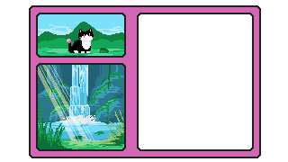

The frog quickly bounces away, through the tall grass and up slippery rocks and dangling vines. You realize it wants you climb up the waterfall together. Cautiously, you follow, hanging onto the stronger vines when the stone becomes too wet. Just as you begin to wonder if the frog will jump all the way to the top, it stops. You collapse next to it, exhausted by the climb. It nudges you repeatedly, until you raise your head. Ah, this is what it wanted to show you. The ledge you rest on is about halfway up, enough to see the pool below and into the trees. Here, the sun hits the water directly, and your eyes widen as the world fills with color. The mist sprays outwards, creating a beautiful rainbow. You watch as the rainbow twists and turns with the changing light, shimmering as if it is laughing with joy. Over time, it begins to fade as the sun's light grows weaker. The jumpy frog nudges you a final time before hopping onwards. You bow to the guardian of the forest. Perhaps next time, you will climb with it to the top of the waterfall. You realize the day is running short when the first streaks of orange and pink begin to paint the sky. Your adventure is almost at an end. You know where to go.